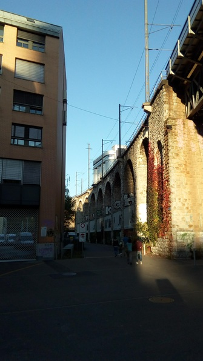

Highlight of today: dancing at the Freies Tanzen! I meet a computer scientist (Clarissa?), with whom I dance all sorts of different things, ending with learning the quick waltz step and making a triumphant circuit around the room!
Also I take a run across the Limmat, which is beautiful:

And make myself a cheese sandwich, heck yeah!